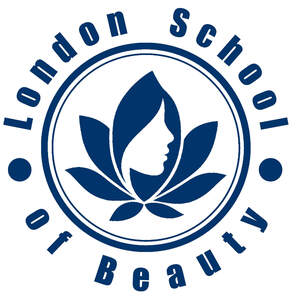
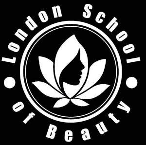

Trade Mark Journal No.2025/021 23 May 2025
UK00004198264 2 May 2025 (3,16,35,41,44)
Mark 1

Mark 2

- Class 3
- Beauty serums; Beauty care cosmetics; Beauty creams; Beauty lotions; Beauty care preparations; Beauty gels; Beauty creams for body care; Beauty milks; Beauty tonics for application to the body; Beauty tonics for application to the face; Beauty milk; Beauty preparations for the hair; Beauty serums with anti-ageing properties; Distilled oils for beauty care; Beauty masks; Masks (Beauty -); Anti-aging skincare preparations; Skincare preparations; Skincare cosmetics; Non-medicated skincare preparations; Cosmetic products in the form of aerosols for skincare; Anti-aging moisturizers used as cosmetics; Moisturisers [cosmetics]; Perfumery products; Aromatherapy creams; Cosmetic moisturisers; Self-tanning preparations [cosmetics]; Anti-aging creams [for cosmetic use]; Cosmetic massage creams; Anti-ageing moisturiser; After-sun oils [cosmetics]; Suncare lotions [for cosmetic use]; Sets of cosmetic oral care products; Anti-ageing creams; Cosmetic products in the form of aerosols for skin care; Facial creams [cosmetics]; Skin care creams [cosmetic]; Cosmetic creams for skin care.
- Class 16
- Training manuals.
- Class 35
- Online retail store services relating to cosmetic and beauty products; Career advisory services (other than education and training advice); Marketing research in the fields of cosmetics, perfumery and beauty products.
- Class 41
- Teaching of beauty skills; Beauty arts instruction; Educational services in the nature of beauty schools; Instruction in cosmetic beauty; Beauty school services; Educational services in the nature of correspondence courses; Educational seminars relating to beauty therapy; Education services in the nature of courses at the university level; Training courses; Residential education courses; Distance learning courses; Educational services relating to beauty therapy; Instruction courses related to slimming; Residential training courses; Instruction courses relating to health; Provision of education courses; Postgraduate training courses; Correspondence courses, distance learning; Providing online courses of instruction; Preparation of educational courses and examinations; Correspondence courses; Provision of training courses; Training courses (Provision of -); Educational courses (Provision of -); Educational services for providing courses of education; Providing courses of training; Educational services provided by beauty schools; Vocational training courses (Provision of -); Providing courses of instruction; Arranging of training courses; Arranging of courses of instruction; Educational establishments providing courses of instruction (Services of -); Provision of courses of instruction; Courses of instruction (Provision of -); Arranging technical instruction courses; Written training courses; Conducting training courses relating to nutrition online; Courses for the development of consulting skills; Production of course material distributed at professional courses; Provision of training courses for young people in preparation for careers; Arranging of classes; Conducting of classes; Conducting distance learning instruction at the graduate level; Conducting classes in nutrition; Production of course material distributed at professional lectures; Providing courses of instruction at post-graduate level; Production of course material distributed at vocational courses; Conducting distance learning instruction at the university level; Production of course material distributed at vocational seminars; Production of course material distributed at professional seminars; Production of course material distributed at management lectures; Teaching by correspondence courses; Arranging and conducting of classes; Instruction in group exercise; Training of teachers; Training; Education and training; Vocational training; Training and instruction; Training services; Education and training consultancy; Vocational skills training; Organisation of training; Advanced training; Practical training; Education, teaching and training; Providing of training; Providing training; Conducting training seminars; Provision of training; Career and vocational training; Instructional and training services; Continuous training; Conducting workshops [training]; Vocational training services; Training and education services; Education and training services; Adult training; Teacher training services; Vocational skills training (Provision of -); Industrial training; Educational and training services; Practical training services; Vocational education and training services; Arrangement of training courses in teaching institutes; Conducting training seminars for clients; Providing online training seminars; Providing of continuous training courses; Providing of training, teaching and tuition; Organisation of seminars relating to training; Practical training [demonstration]; Training related to nutrition; Arranging and conducting of training courses; Education and training in the field of business management; Provision of online training; Training consultancy; Health and wellness training; Organisation of training seminars; Sales training services; Business training consultancy services; Education and training services in the field of occupational health and safety; Staff training services; Consultancy relating to vocational skills training; Education and training in the field of occupational health and safety; Workshops for training purposes; Commercial training services; Consultancy services relating to training; Production of training videos; Organising of business training; Provision of training courses in personal development; Courses (Training -) relating to science; Organisation of training courses; Conducting of educational courses in science; Conducting courses, seminars and workshops; Development of educational courses and examinations; Courses (Training -) relating to customer services; Conducting of courses; Personal development courses; Conducting of educational courses; Conducting instructional courses; Conducting of educational courses in business management; Courses (Training -) relating to research and development; Providing of further training courses; Provision of training courses for young people in preparation for vocations; Provision of educational courses relating to diet; Arranging of courses of instruction for tourists.
- Class 44
- Beauty counselling; Beauty salons; Salons (Beauty -); Beauty spa services; Beauty salon services; Salon services (Beauty -); Beauty therapy services; Beauty consultancy; Beauty treatment; Beauty treatment services; Beauty care; Beauty care services; Beauty consultancy services; Beauty consultation; Beauty consultation services; Beauty information services; Beauty therapy treatments; Facial beauty treatment services; Services of a hair and beauty salon; Consultancy in the field of body and beauty care; Beauty treatment services especially for eyelashes; Hygienic and beauty care services; Beauty care of feet; Beauty advisory services; Beauty care services provided by a health spa; Consultancy services relating to beauty; Hygienic and beauty care; Human hygiene and beauty care; Cosmetics consultancy services; Cosmetic make-up services; Consultation services in the field of make-up.
Bhavesh Joshi